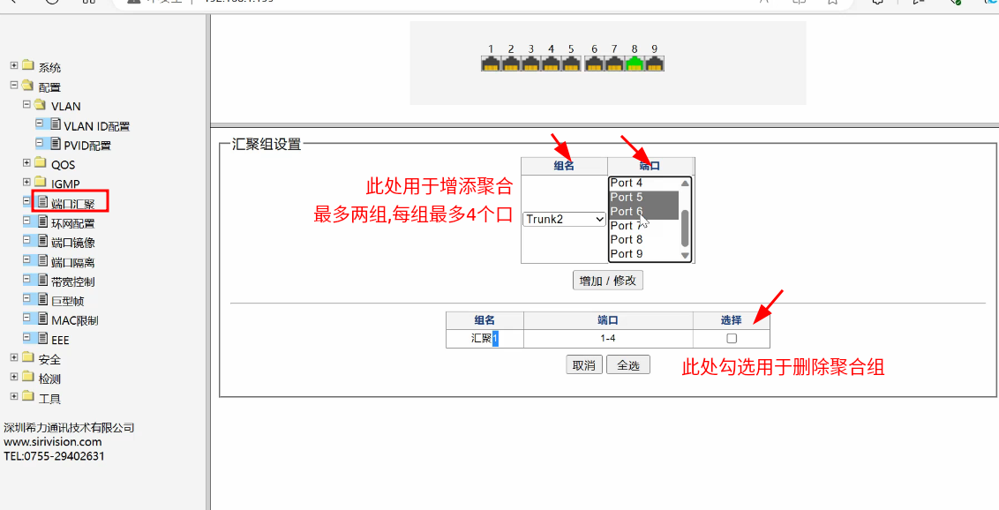
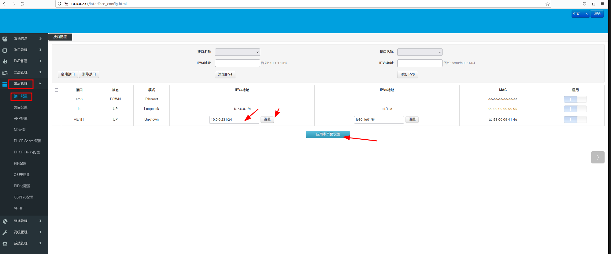
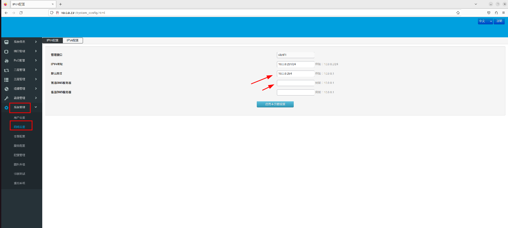
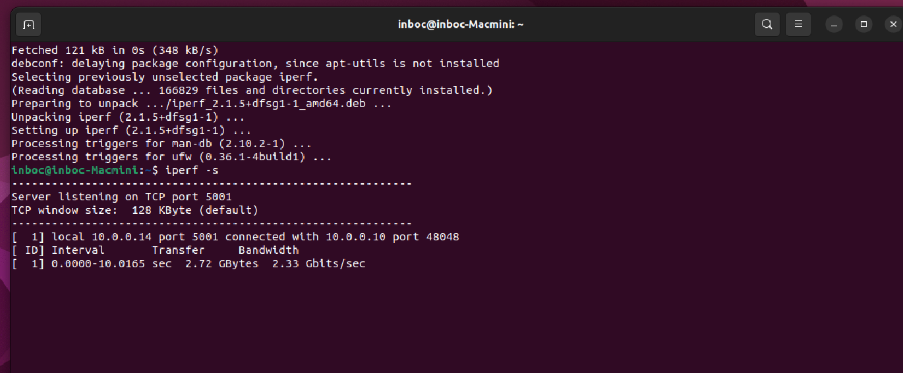

- 拓扑路径(drow.io绘制)
nexcloud/inboc-sys-junior/mindmap/lab_topology.drawio
1. 希力威视2.5G网管交换机
1.1 登录web & 修改ip
连接电脑和交换机,设置电脑和交换机为同网段ip地址
浏览器访问出厂默认管理ip(192.168.1.199 user:admin passwd:admin)
本例已经修改交换机管理ip分别为(10.0.0.233/24 10.0.0.234/24 网关:10.0.0.254)
修改后重新登录

1.2 链路聚合
选择端口汇聚,选择trunk1,鼠标拖动选择目标端口,点击应用即可添加
点击apply应用,并点击左侧工具栏内保存按钮

2. ubuntu配置
2.1 双网卡聚合配置文件 /etc/netplan/xxxx.yml
network:
version: 2
ethernets: # 网卡设备本身的配置
enp1s0:
dhcp4: no # 关闭自动获取ip
optional: true # 设备是可选的
enp7s0:
bonds: # 网卡聚合的配置
bond0:
addresses: [10.0.0.30/24] # 设置bond0 ip
routes: # 设置路由
- to: default
via: 10.0.0.1
metric: 100
nameservers:
addresses: [10.0.0.10] # 设置dns
interfaces: # 绑定的网卡接口
- enp1s0
- enp7s0
parameters: # 聚合模式参数
mode: balance-rr
mii-monitor-interval: 100
lacp-rate: fast
transmit-bash-policy: layer2
2.2 服务冲突 关闭NetworkManager,Ubuntu 18.04 及更高版本中，聚合网络配置由 Netplan 管理(systemd-networkd). 网卡聚合之后,重启NetworkManager服务也无法在桌面管理ip,wifi功能也受限制,暂时无方案解决 配置不生效的情况,日志表明是NetworkManager-dispatcher.service冲突
sudo systemctl stop NetworkManager
2.3 生效以上配置
sudo netplan apply
2.4 删除 bonding 以及 重新配置生效，用于需要重新修改bond设置
sudo modprobe -r bonding
sudo netplan apply
2.5 检查网卡状态 以及 ip
ip a s (bond0 & 物理网卡mac地址一致,说明配置成功)
ip link show (查看网卡up / down 状态)(查看 master slave 关系)
cat /proc/net/bonding/bond0 (查看bond0详细内容)
3. 巢客三层交换机
3.1 登录web & 修改ip
电脑连接交换机,设置同网段ip地址,web访问(user:admin passwd:admin)
出厂设置管理ip为192.168.10.12；本例已经修改并设置管理ip分别为10.0.0.230/24 , 10.0.0.231/24 , 10.0.0.232/24
修改后点击本应用本页面设置,并重新登录

3.2 设置默认网关和DNS,修改后点击本应用本页面设置
本例网关: 10.0.0.254 DNS: 10.13.1.1 , 10.13.1.2 可以通信WAN网

3.3 链路聚合
本例链路聚合仅用于连接NAS,设置静态链路聚合,按照拓扑图,仅在10.0.0.230设置
选择创建,勾选目标端口,创建后应用设置

4. 局域网内工具测速
4.1 iperf 网卡测试工具检测结果

5. 接入主网测试
选择交换机10.0.0.230,利用千兆口连接WAN网,不用另做配置,所有pc均已可通信